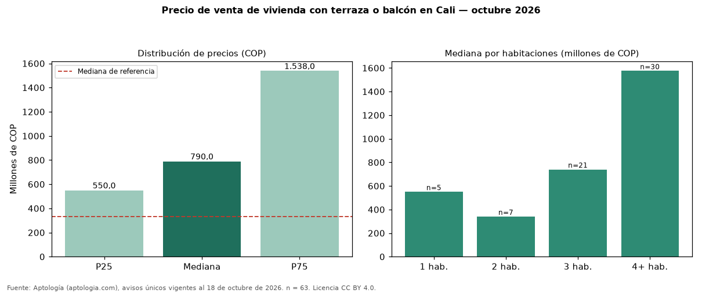

Precio de venta de vivienda con terraza o balcón en Cali — octubre 2026
Con 63 avisos únicos, el precio mediano de vivienda con terraza o balcón en venta en Cali es COP 790 millones. Eso es 139 % más que la mediana de toda la oferta de venta en Cali (COP 330 millones). Frente a los avisos sin terraza ni balcón del mismo grupo (COP 275 millones, n = 81), la diferencia es de +187 %; por metro cuadrado, +10 %. El rango intercuartílico va de COP 550 millones a COP 1,54 mil millones (razón 2,8). Por metro cuadrado, la mediana es COP 4.888.889/m² (+16 % frente a COP 4.202.128/m²), puesto 3 de 6 ciudades comparables. Por habitaciones: 1 habitación, COP 550 millones (n = 5); 2 habitaciones, COP 340 millones (n = 7); 3 habitaciones, COP 740 millones (n = 21); 4 o más habitaciones, COP 1,57 mil millones (n = 30). El área mediana es 230 m² (referencia: 70 m²). Datos abiertos CC BY 4.0 de Aptología; fuente y búsqueda de inmuebles: https://www.aptologia.com/venta/cali. Archivos: PDF de 2 páginas, CSV con las cifras y gráfica PNG.

| Avisos únicos | 63 |
|---|---|
| Percentil 25 | COP 550.000.000 |
| Mediana | COP 790.000.000 |
| Percentil 75 | COP 1.538.000.000 |
| Mediana por m² | COP 4.888.888 |
Fuente: avisos vigentes de portales inmobiliarios recopilados por Aptología, deduplicados (mínimo 30 avisos únicos por celda). Precios pedidos, no cerrados. Fecha: 2026-10-18.